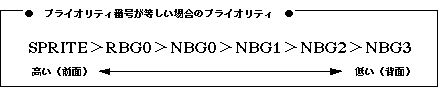

Return to previous page | Return to menu | Go to next page
void
Scroll function
NBG priority set
void slPriorityNbg0(num)
void slPriorityNbg1(num)
void slPriorityNbg2(num)
void slPriorityNbg3(num)
Uint16 num ;
num Drawing priority number (8 types from 0 to 7)
Prioritize the normal scroll screen “NBG0, NBG1, NBG2, NBG3”.
The higher the priority number, the higher the display order, and the lower the priority number, the more the drawing is done on the back.
If the priority number is 0, the scroll surface is considered transparent and is not drawn.
None
Refer to the figure below for the priority when the same priority number is specified for other scroll planes and polygon planes.

Note) POLYGON is included in the sprite.
Reference: Chapter 8 Scroll
slPriorityNbg0,1,2,3